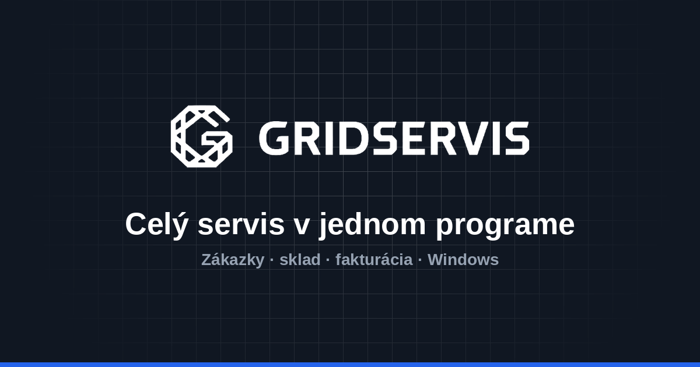

Úplný zoznam prvkov používateľského rozhrania webu a programu, farieb, písma a štýlu. Podľa tohto vytvárajte reklamy, aby vyzerali ako appka.
1 · Značka a logá
GridServis – program na správu autoservisu pre Windows. Slogan: „Celý servis v jednom programe. Od príjmu auta po faktúru.“ Značka je postavená na mriežke (grid) – znak je osemuholník s písmenom G v sieti línií.
gridservis-logo.png · znak + nápis, čierne na bielom (hlavné logo)

og-gridservis.png · 1200×630, biele logo na tmavej mriežke #101722, modrý pás dole (hotový banner)
Nápis je vlastné písmo značky – nikdy ho nepíšte fontom, použite PNG.
Čierne logo len na svetlom pozadí, biele logo len na tmavom (#101722).
Okolo loga nechajte voľné miesto aspoň ako je výška znaku.
Neťahať, nerotovať, nefarbiť logo do modrej.
2 · Farby
Celkový dojem: biela + veľmi svetlá sivá, čierny text, jedna modrá. Modrá je jediný akcent; zelená, oranžová a červená sa používajú len ako stavové farby (jemné pozadie + sýtejší text). Žiadne farebné prechody, žiadne neónové farby.
Web
Ink (nadpisy, hlavné tlačidlo)#0d1117
Text#3f4a59
Tlmený text#55606e
Čiara / okraj#e8ebf0
Pozadie#ffffff
Pozadie sekcie#f7f8fa
Akcent modrá#2563eb
Akcent tmavá (hover)#1b4ed1
Akcent jemná#eef3ff
Tmavá sekcia / CTA#101722
OK zelená#16713f
OK pozadie#e6f6ed
Upozornenie pozadie#fff8e8
Upozornenie text#7a4a06
Aplikácia (Windows program)
Modrá (aktívna položka, hlavné tlačidlo)#3b7df0
Modrá v grafoch#528cf2
Bočný panel#f5f8fd
Hlavička tabuľky#eef1f7
Okraj kariet#e6ebf3
Text#1e2637
Zelená (tržby, Hotové)#17a06b
Zelená jemná#e3f3ed
Oranžová jemná (V riešení)#fdf3e3
Červená jemná (Čaká na diely)#fcedeb
Farby webu sú presne z CSS (farby/farby.css). Farby appky sú odmerané zo screenshotov – stavové odtiene sú orientačné.
Pomer použitia
~85 % biela / svetlosivá (#fff, #f7f8fa, #f5f8fd)
~10 % čierna/tmavá (text, hlavné tlačidlo, tmavý CTA pás #101722)
Appka používa čisté bezpätkové systémové písmo (na Windows Segoe UI). Nadpisy obrazoviek sú tučné, malé popisky nad číslami sú VEĽKÉ tučné s rozstupom (napr. „ZÁKAZKY 2026“, „TRŽBY“).
Web nenačítava žiadne externé fonty – ani reklamy nemusia. Ak treba konkrétny súbor, najbližší voľný ekvivalent je Inter alebo Segoe UI.
Nadpisy vždy tesne (záporný letter-spacing), text s dostatočným riadkovaním.
4 · Štýl a tvar
Čistý, vzdušný, technický – veľa bieleho miesta, tenké čiary, jemné tiene.
Mriežka na pozadí: tenké linky v rastri 34 px, farba #e4e8ef, k okrajom sa vytráca (radial mask). Na tmavom pozadí biele linky s 8 % priehľadnosťou. Je to vizuálny podpis značky.
Zaoblenie: karty 14 px, veľké bloky a screenshoty 20 px, tlačidlá 11 px, štítky/badge úplne okrúhle (pill 999 px).
Okraje: 1 px #e8ebf0; zvýraznená karta 2 px čierna.
Tiene: jemné, rozptýlené, napr. 0 40px 90px −50px rgba(13,17,23,.5) pod screenshotom.
Ikony: obrysové (outline), hrúbka čiary 1,8 – 2,6, zaoblené konce, jednofarebné. Žiadne farebné ilustrácie ani 3D.
Screenshoty sa vždy ukazujú v rámčeku (1 px okraj, zaoblenie 20 px, veľký jemný tieň), nikdy v mockupe telefónu.
Nálada: vecná, dôveryhodná, remeselná – autoservis, nie korporát ani startup-hype.
5 · Web – úplný zoznam UI prvkov
Stránky: Domov, Funkcie, Cenník, Inštalácia (Stiahnuť), FAQ, Kontakt, Môj účet, Obnova, Presun, Po platbe (Hotovo), Odstúpenie, právne stránky, 404.
Hlavička (header)
Biela, prilepená hore, výška 74 px, po scrolle jemná spodná čiara
Vľavo logo (výška 34 px)
Navigácia: Domov · Funkcie · Cenník · Inštalácia · FAQ · Kontakt (aktívna = tučná + 2 px čierna podčiarkovačka)
Tlačidlo „Prihlásiť“ s ikonou osoby – modrý text na jemnom modrom pozadí (#eef3ff)
Tlačidlo „Predplatiť“ – čierne, plné
Mobil: burger menu (3 čiarky), rozbaľovací zoznam odkazov
Hero (úvod)
Vycentrovaný obrovský nadpis H1 + lead text
Dve tlačidlá: čierne plné „Predplatiť — 199,99 € za rok“ a biele s okrajom „Vyskúšať demo“
Drobný riadok pod tlačidlami: „Demo je zadarmo… Windows 10 a 11“
Pozadie s mriežkou, pod ním veľký screenshot Prehľadu v rámčeku s tieňom